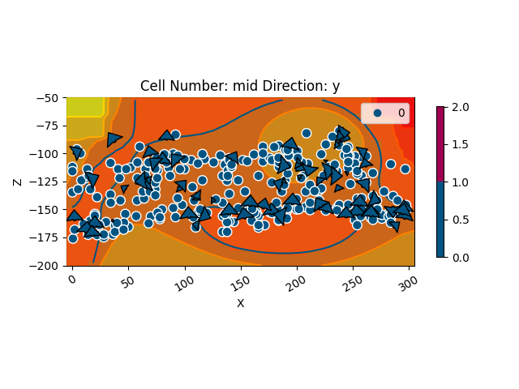

Note
Click here to download the full example code
Moureze¶
These two lines are necessary only if gempy is not installed
import sys, os
os.environ["THEANO_FLAGS"] = "mode=FAST_RUN,device=cpu"
# Importing gempy
import gempy as gp
# Aux imports
import numpy as np
import pandas as pn
import matplotlib.pyplot as plt
Loading surface points from repository:¶
With pandas we can do it directly from the web and with the right args we can directly tidy the data in gempy style:
Moureze_points = pn.read_csv(
'https://raw.githubusercontent.com/Loop3D/ImplicitBenchmark/master/Moureze/Moureze_Points.csv', sep=';',
names=['X', 'Y', 'Z', 'G_x', 'G_y', 'G_z', '_'], header=0, )
Sections_EW = pn.read_csv('https://raw.githubusercontent.com/Loop3D/ImplicitBenchmark/master/Moureze/Sections_EW.csv',
sep=';',
names=['X', 'Y', 'Z', 'ID', '_'], header=1).dropna()
Sections_NS = pn.read_csv('https://raw.githubusercontent.com/Loop3D/ImplicitBenchmark/master/Moureze/Sections_NS.csv',
sep=';',
names=['X', 'Y', 'Z', 'ID', '_'], header=1).dropna()
Extracting the orientatins:
mask_surfpoints = Moureze_points['G_x'] < -9999
surfpoints = Moureze_points[mask_surfpoints]
orientations = Moureze_points[~mask_surfpoints]
Giving an arbitrary value name to the surface
surfpoints['surface'] = '0'
orientations['surface'] = '0'
Data initialization:¶
Suggested size of the axis-aligned modeling box:
Origin: -5 -5 -200
Maximum: 305 405 -50
Suggested resolution: 2m (grid size 156 x 206 x 76)
Only using one orientation because otherwhise it gets a mess¶
Number voxels
np.array([156, 206, 76]).prod()
Out:
2442336
resolution_requ = [156, 206, 76]
resolution = [77, 103, 38]
resolution_low = [45, 51, 38]
geo_model = gp.create_model('Moureze')
geo_model = gp.init_data(geo_model,
extent=[-5, 305, -5, 405, -200, -50], resolution=resolution_low,
surface_points_df=surfpoints, orientations_df=orientations,
surface_name='surface',
add_basement=True)
Out:
Active grids: ['regular']
Now we can see how the data looks so far:
gp.plot_2d(geo_model, direction='y')
Out:
<gempy.plot.visualization_2d.Plot2D object at 0x7fcb8a163970>
gp.set_interpolator(geo_model,
theano_optimizer='fast_run', dtype='float64')
Out:
Setting kriging parameters to their default values.
Compiling theano function...
Level of Optimization: fast_run
Device: cpu
Precision: float64
Number of faults: 0
Compilation Done!
Kriging values:
values
range 535.44
$C_o$ 6826.19
drift equations [3, 3]
<gempy.core.interpolator.InterpolatorModel object at 0x7fcb8c089220>
The default range is always the diagonal of the extent. Since in this model data is very close we will need to reduce the range to 5-10% of that value:
new_range = geo_model.get_additional_data().loc[('Kriging', 'range'), 'values'] * 0.2
geo_model.modify_kriging_parameters('range', new_range)
gp.compute_model(geo_model, set_solutions=True, sort_surfaces=False)
Out:
Lithology ids
[2. 2. 2. ... 1. 1. 1.]
Time¶
300k voxels 3.5k points¶
Nvidia 2080: 500 ms ± 1.3 ms per loop (mean ± std. dev. of 7 runs, 1 loop each), Memory 1 Gb
CPU 14.2 s ± 82.4 ms per loop (mean ± std. dev. of 7 runs, 1 loop each), Memory: 1.3 Gb
2.4 M voxels, 3.5k points¶
CPU 2min 33s ± 216 ms per loop (mean ± std. dev. of 7 runs, 1 loop each) Memory: 1.3 GB
Nvidia 2080: 1.92 s ± 6.74 ms per loop (mean ± std. dev. of 7 runs, 1 loop each) 1 Gb
2.4 M voxels, 3.5k points 3.5 k orientations¶
Nvidia 2080: 2.53 s ± 1.31 ms per loop (mean ± std. dev. of 7 runs, 1 loop each)
gp.plot_2d(geo_model, cell_number=[16], series_n=0, show_scalar=True)
Out:
<gempy.plot.visualization_2d.Plot2D object at 0x7fcc7468b7f0>
gp.plot_2d(geo_model, cell_number=16, show_data=True, direction='y')
Out:
<gempy.plot.visualization_2d.Plot2D object at 0x7fcc2d021e20>
sphinx_gallery_thumbnail_number = 4
Out:
<gempy.plot.vista.GemPyToVista object at 0x7fcc3c89d370>

Export data:¶
The solution is stored in a numpy array of the following shape. Axis 0 are the scalar fields of each correspondent series/faults in the following order (except basement):
For the surfaces, there are two numpy arrays, one with vertices and the other with triangles. Axis 0 is each surface in the order:
np.save(‘Moureze_scalar’, geo_model.solutions.scalar_field_matrix) np.save(‘Moureze_ver’, geo_model.solutions.vertices) np.save(‘Moureze_edges’, geo_model.solutions.edges) gp.plot.export_to_vtk(geo_model, ‘Moureze’)
gp.save_model(geo_model)
Out:
True
Total running time of the script: ( 2 minutes 4.415 seconds)